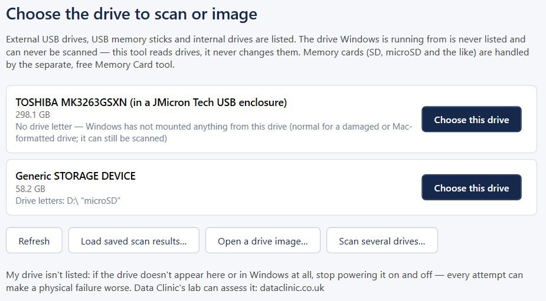

Windows software · hard drives, SSDs and USB sticks
Data Clinic Recovery for Hard Drives
Data recovery software, written by data recovery experts. Recover deleted and lost files from hard drives, SSDs and USB memory sticks — with a free scan and preview, so you never pay to find out whether your files are there.
Windows 10/11, 64-bit · needs administrator rights · version 1.1.1 · 13 languages

What it does
Three ways to get files back
Quick scan
Reads the drive's file tables (NTFS, exFAT, FAT32 and Mac APFS, HFS+ and HFS) and brings back any kind of file they still list — with original names and folders, including files emptied from the Recycle Bin.
Deep scan
Reads the file tables first, then the whole drive, recognising files by their content — for formatted drives and damaged file tables. It always finds at least what a quick scan finds.
Image a struggling drive
Copies a drive showing early trouble to an image file once, so every scan works from the copy. Unreadable sectors are mapped; interrupted images resume. Imaging is free.
Deep scan finds JPEG, PNG, HEIC, Canon/Nikon/Sony raw, MP4, MOV, MKV, MP3, WAV, PDF, Word, Excel, PowerPoint, Outlook PST/OST, ZIP, RAR and more — and you can add your own file signatures.
Ask Rex AI
Tell it what you've lost, in your own words
A chat panel opens beside the normal screens. Describe what you want back and Rex proposes a plan: which scan to run and which files to pick. Part of a name is enough — "Laurie project" finds "Laurie's Project File.txt".
- Nothing starts until you press Yes — and before you agree, the file list shows exactly which files Rex would tick.
- Guided to your saved files. Rex names the button to press on each screen and rings it in green. He never presses anything himself.
- Safety stays in the software. A failing drive gets no plan; a drive with warning signs is imaged first; the drive is never written to.
- Private by design. Off until you turn it on. Files, file contents and the list of file names are never sent.
Free for planning and scanning within a daily limit — recovering files needs a licence. Available in all 13 languages; powered by Claude, Anthropic's AI model, and not offered where Anthropic's service isn't available. AI suggestions can be wrong — which is why the software checks every plan and waits for your Yes.

How it works
Four steps. Only the last one costs anything.
Choose drive
Install, plug in the drive and choose it. Its health report is checked straight away; a failing drive stops here.
FreeLook for files
The tool recommends one way to look — usually a quick scan, or imaging first if the drive shows warning signs.
FreePick files
Browse with thumbnail previews, folders and filters. Files that can't be recovered are hidden by default.
FreeSave files
Choose another drive to save to. Enter your licence key here — and only here.
Licence needed
It can't touch the wrong drive
The picker only lists drives that can safely be read. The drive Windows runs from never appears, so it can never be scanned or changed — and recovered files can only be saved to a different drive. Enforced, not just advised.
Pricing
One feature set. Choose how long you need it.
Every licence includes everything above. Scan and preview are free — you only pay to recover. Your licence key arrives by email straight after payment.
Personal — 28 days
- A single recovery job on your own drives
- Everything the tool does
- 14-day refund window
Personal — 1 year
- Your own drives, all year
- Everything the tool does
- 30-day refund window
- A year costs less than two 28-day licences
Business — 1 year
- PC repair shops and IT support
- Commercial use, up to 3 PCs at one business
- Your business name on the job report
- 30-day refund window
Secure checkout by Stripe. Licences are sold through Onelink ("Link"), Stripe's merchant-of-record service, which handles payment, tax and receipts.
Honest about the limits
What no software can do
Overwritten data is gone
When a drive has re-used the space a deleted file occupied, no software can bring it back. This tool tells you, file by file, rather than selling false hope.
SSDs erase deleted files
On an SSD, deleted files are usually erased by the drive itself within minutes (TRIM), and a quick format erases the whole drive. The tool marks such files "erased by the drive".
Encryption needs its keys
Windows EFS files come back unreadable without the original account's key. FileVault-encrypted Mac volumes are named but cannot be read.
A failing drive needs a lab
Clicking, not detected, or a health report that says failing — that's a job for a professional lab, not software. The tool says so and stops. Our lab is in the UK →
FAQ
Questions
Is the scan really free?
Yes. Choosing the drive, scanning, imaging, previewing files, the job report and CSV export are all free. You only need a licence at the final step, to save recovered files.
What currency will I pay in?
Prices are set in pounds sterling, but checkout shows the price in your own currency, with any sales tax for your country worked out automatically.
Does it work on a Mac?
The software runs on Windows 10 and 11 (64-bit). It can read drives formatted on a Mac (APFS, HFS+ and HFS) once they're plugged into a Windows PC.
Can it recover files from the drive Windows runs from?
No. To keep that drive safe, it never appears in the drive list. To recover from it, take the drive out and connect it to another Windows PC.
Which languages?
13: English, Spanish, German, French, Italian, Portuguese (Brazil), Dutch, Polish, Turkish, Russian, Hindi, Japanese and Chinese (Simplified). Job reports are in English.
What does Ask Rex send over the internet?
Only what you type to Rex and what Rex needs to plan — never your files, their contents or the list of file names. Ask Rex is off until you turn it on.
My drive is clicking or isn't detected. Will this help?
No — those are physical faults, and running any software on the drive can make things worse. Stop using it and take it to a professional data recovery lab.
See what's recoverable — before you pay
Free download for Windows 10 and 11. Version 1.1.1.
Download free